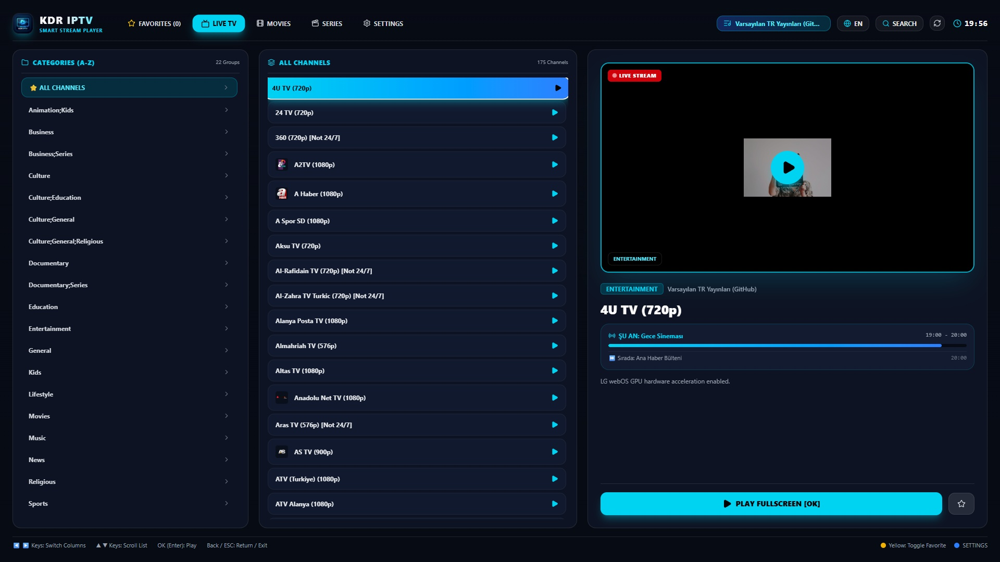

1. General Application Information
Application Title
KDR IPTV: Smart Stream Player
Application ID
com.kdr.iptv
Version
1.0.4
Graphic Resolution
1920 x 1080 (Full HD / 4K UHD Compatible)
Service Category
Entertainment / Media & Video
Authentication / Login
None (Not Applicable - Open Access)
In-App Billing / Subscriptions
None (Free Media Player)
Cloud Pairing Portal
https://pairiptv.ozturk.app
2. Remote Controller Mapping
| Key / Input |
Function on Dashboard |
Function in Video Player |
| Arrow Keys (Up / Down) |
Navigate channel list / category items |
Switch previous / next channel |
| Arrow Keys (Left / Right) |
Switch category tabs (Live, Movies, Series, Settings) |
Seek forward / rewind video (VOD) |
| OK / Enter Key |
Select channel, start playback, confirm modal |
Toggle On-Screen Display (OSD controls) |
| Back / Return Key |
Exit dialog, go back to top category bar, exit app |
Close video player, return to Dashboard |
| Magic Remote Pointer |
Hover over cards, click channel, scroll list |
Click play/pause, audio track, subtitle, PIP |
3. Test Account & Prerequisites
No credentials required: The app does not require username, password, or paid subscription. A pre-loaded default demonstration playlist with public streaming channels is included out of the box so QA testers can immediately begin functional testing.
Scenario 1: App Launch & Splash Screen
Step 1: Launch com.kdr.iptv from the webOS Home Launcher.
Expected Result: The branded splash screen displays smoothly, initializing network cache and fetching the default stream catalog within 1-2 seconds.
Scenario 2: Dashboard & Channel Browsing
Step 1: Using the remote D-Pad, navigate through the top categories: Live TV, Movies, Series, and Favorites.
Step 2: Press Down Arrow to focus on the channel grid. Use Left/Right/Up/Down to browse channels.
Step 3: Notice the Live EPG program information and channel logo displayed for the focused channel.
Expected Result: Focus transitions smoothly with clear visual highlighting. Channel lists load without freezing.
Scenario 3: Video Playback & Player OSD Controls
Step 1: Press OK/Enter on any channel in the dashboard.
Step 2: Video begins playing in full screen with native HLS streaming.
Step 3: Press OK/Enter during playback to toggle the Player OSD bar (shows Channel Name, EPG title, Audio Track selector, Subtitles, and Multi-Screen PIP button).
Step 4: Press Back button to close the player and return to the channel catalog.
Scenario 4: Cloud Pairing & Playlist Management
Step 1: In the TV app, click "Manage Playlists" or "Pair Device". A 6-character connection code (e.g. AB12CD) and QR code appear on screen.
Step 2: Open https://pairiptv.ozturk.app on any mobile browser or computer.
Step 3: Enter the 6-character code and paste any custom M3U/M3U8 link or Xtream API credentials, then click "Send to TV".
Expected Result: The TV screen instantly detects the new playlist via WebSocket, automatically reloads the catalog, and confirms successful sync.

Scenario 5: Multi-Screen PIP (Picture-in-Picture)
Step 1: During live TV playback, bring up the OSD and select the PIP icon.
Step 2: Select a secondary channel from the mini-list.
Expected Result: Secondary channel plays in an overlay thumbnail in the corner while main channel continues playing uninterrupted.
Scenario 6: Settings, Privacy Policy & Exit
Step 1: Navigate to the Settings tab.
Step 2: Verify Device ID, Version 1.0.4, and click "Privacy Policy" (opens https://pairiptv.ozturk.app/privacy).
Step 3: Press the TV Back/Exit button to smoothly exit the application.
4. Summary for QA Reviewers
Compliance & Safety: KDR IPTV complies strictly with LG webOS TV guidelines. The app operates as an independent media player, contains zero copyright-infringing content, requires no payment or login, and supports both standard and LG Magic Remote controllers.